Moissy-Cramayel 2006

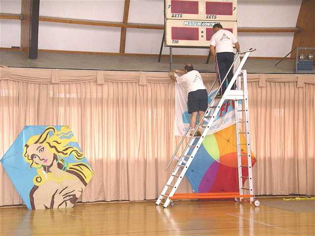
Moissy-Cramayel, je débute la saison hiver en indoor. Un grand gymnase, un bon accueil organisé par Franck Guillemet, président de l'association Cramay'Ailes. Et Franck met la main à la pâte pour décorer la salle pour les 2 jours...

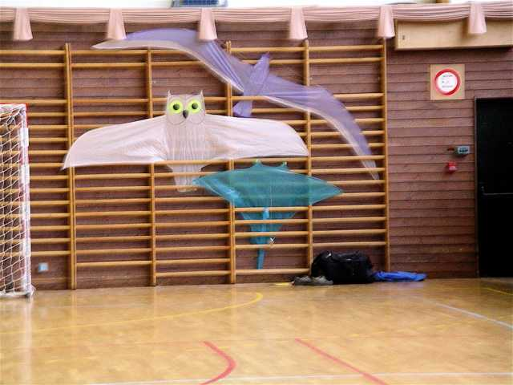
De mon côté, je décore en montant tout ce que j'ai amené...

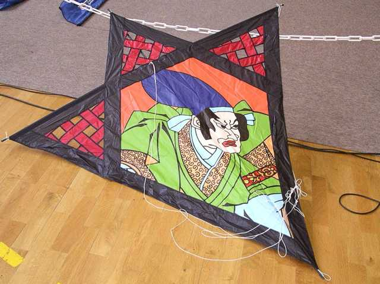
Et, surprise, une Jessy ! Mais non, ce n'en est pas une, les mesures (1/4, 1/4, 1/4...) ne sont pas les mêmes, ce serait plutôt 1/3, 1/3, 1/3... et des angles à 60°. En plus elle a des tissages et de l'appliqué qui ont dû demander bien du travail. Mais son propriétaire m'a dit qu'il l'avait en fait achetée, sans doute "made in China"...

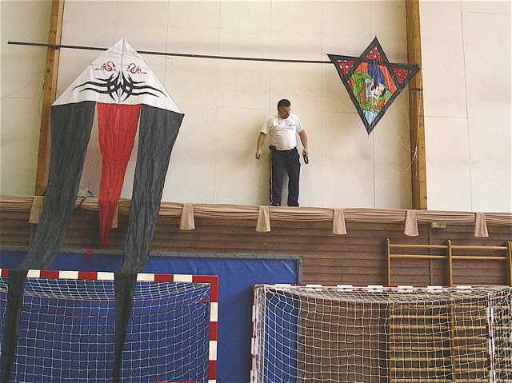
Mais Franck sait aussi prendre des risques pour monter les CVs toujours plus haut !

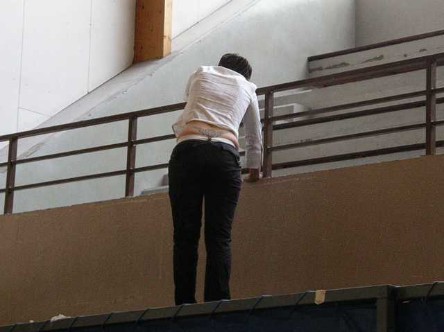
Et Mademoiselle fait aussi de l'escalade pour accrocher ses oiseaux !

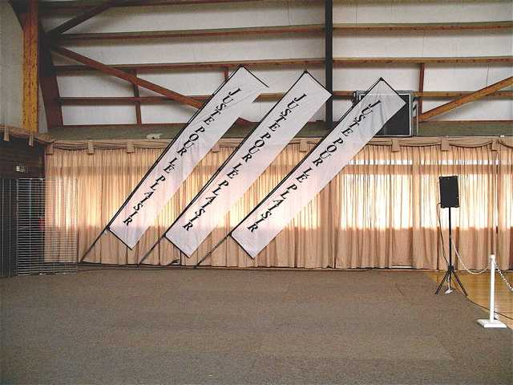
Les bannières de Cramay'Ailes sont à l'honneur. Ca a été un boulot pour qu'on puisse tendre le haut !

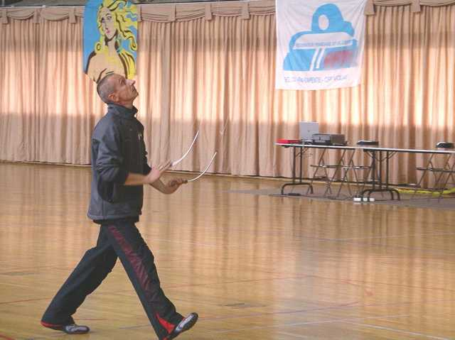
Samedi, vol libre. Fabrice se jette sur la piste avec son révo dès qu'il peut et n'en sortira pas beaucoup !

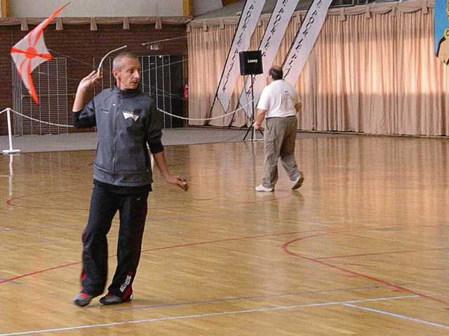
Là, vous avez compris, le cerf-volant est derrière lui, en train de faire un 360°...

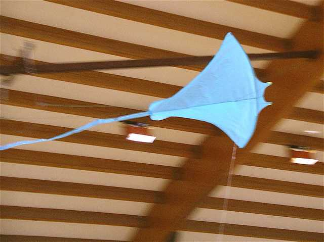
Je fais voler ma raie Manta, j'en suis très content ! Tant mieux, je l'ai faite hier et j'ai terminé à 23 h ! Reste un peu de travail encore (légère déco, un peu de dièdre, peut-être, mais ça va pénaliser mes 62 g ?).

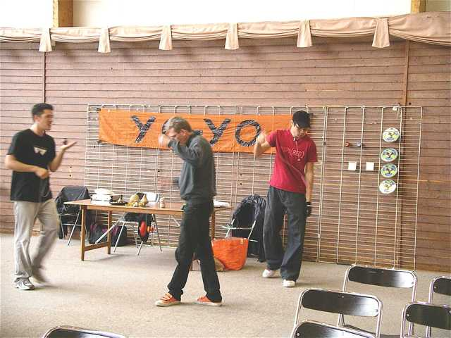
Jim et sa bande étaient là avec leurs Yoyos de toutes sortes, toupies, diabolos... Damien est déjà en train d'essayer tous les gadgets, comme la toupie sur roulement à bille... (record du monde : 11 minutes !)

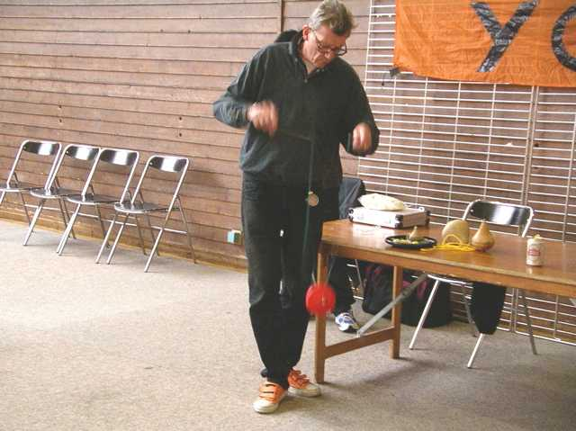
Jim joue-t-il ici avec une espèce de gros diabolo asymétrique ?

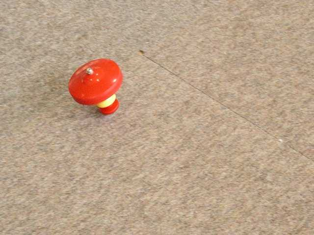
En fait, c'est une grosse toupie ! Et en plus, elle siffle quand elle tourne assez vite !

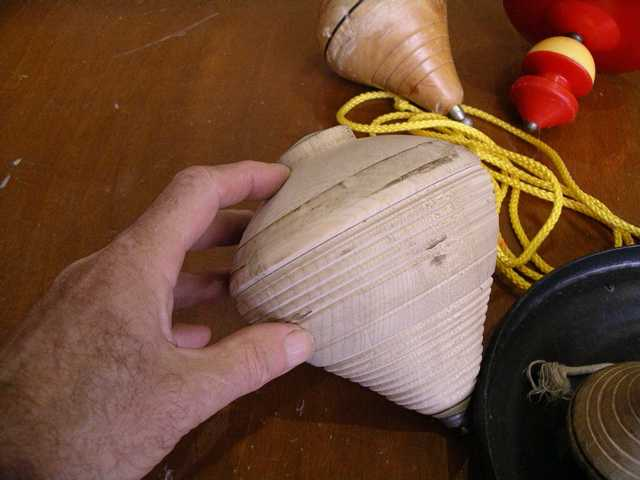
Une autre grosse toupie en bois tourné (du frêne ?), splendide, avec toutes les stries pour l'adhérence, et la ficelle dimensionnée pour !

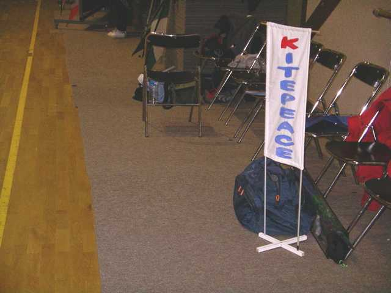
Bruno Kozon est venu commenter. Il a aussi créé une bannière pas comme les autres, munie d'un pied adapté à l'indoor...

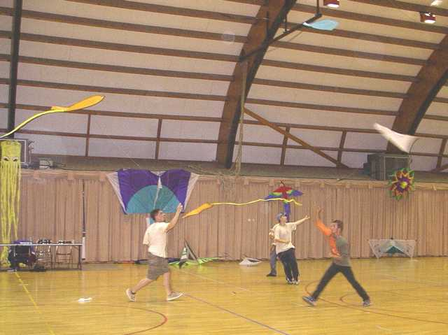
Les Raz'Mokets ont revisité le combat de cerf-volant, en indoor ! On utilise des sortes de grands combattants avec une queue en crépon. Il faut arracher la queue des autres, puis aller percuter une cible en en restant à 5 m au moins ! C'est animé, comme jeu, mieux vaut débarrasser le plancher avant !

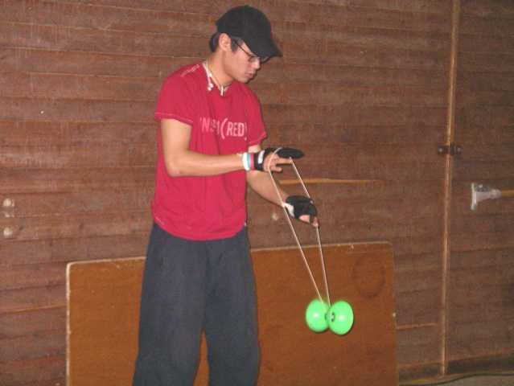
Au soir, on se prépare pour un vol de nuit. En indoor, c'est plutôt rare ! Avantage : on est assuré de la météo et on n'aura pas trop froid... Ca n'arrête pas la bande à Jim, qui manipule une sorte de gros diabolo, mais sans baguettes !

Ce soir, couscous. Dommage, il arrive tiède et ce ne sont pas les petites lampes à alcool qui vont le réchauffer. Bah, on le mangera plus tard, on sera plus tranquilles...

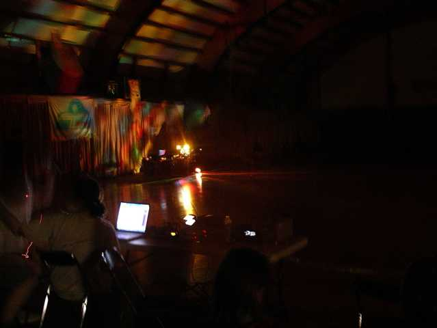
Ca y est, ambiance nuit, boule à facettes, projecteur multicolore, musique adéquate, tout est OK. Il y a même un clown-jongleur-présentateur spécialisé, plutôt chauffeur-de-salle mais ça meuble les temps morts...

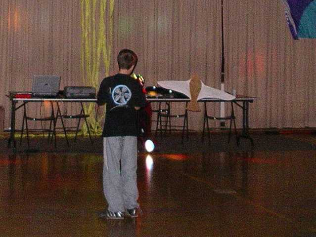
Le vol de nuit est parti, mais des mecs qui bougent tout le temps et avec éclairage nuit, faut pas compter sur les photos ! J'ai confié mon petit Bi, papier bambou à un jeune Maxime... pour le prendre en photo...

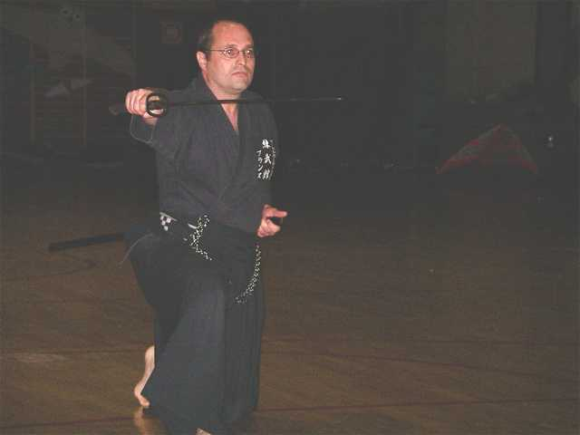
Les Crazy Drivers (Damien et Fabrice) voleront en paire de révos avec de petites lampes rouges sur les CVs et au sol. Vincent X... présentera aussi des katas de katana (sabre), de nunchaku, de tonfa...

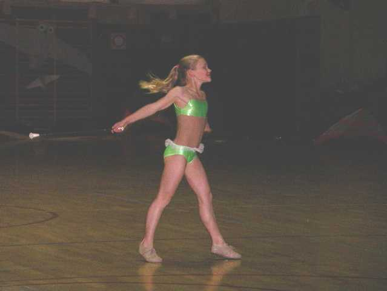
Il y aura même du twirling avec une petite attendrissante, et qui a de l'abattage, une future star !...

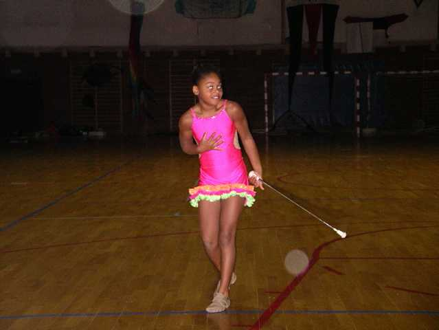
En voilà une autre et elles se produiront même en paire !

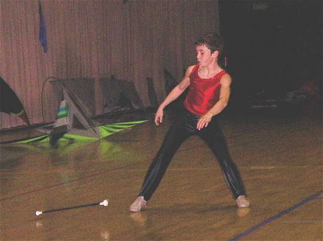
Vive l'égalité des sexes, il y a même un garçon !

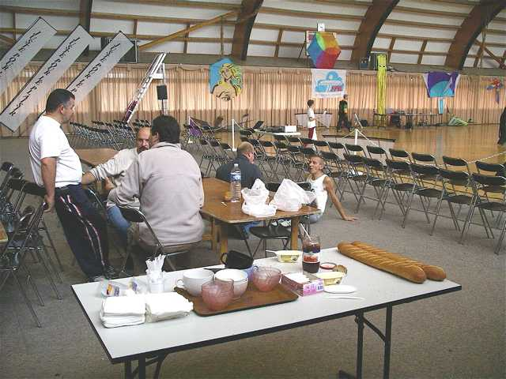
Après cette folle nuit, dimanche matin, on repart. Les compétiteurs n'étant pas au rendez-vous à l'heure, on mange leurs pains au chocolat et autres douceurs !

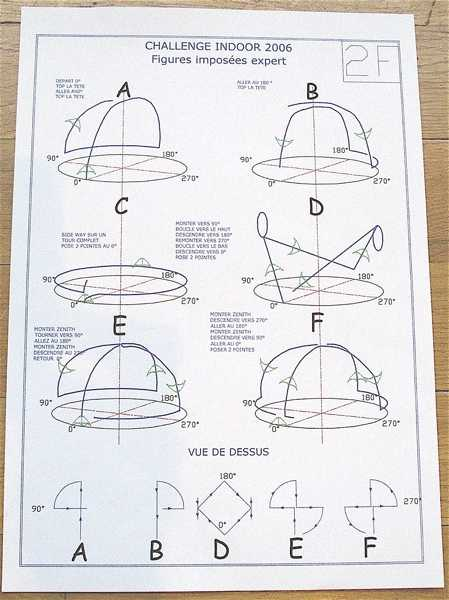
Bon, la compète peut commencer, tout est soigneusement planifié. Le matin, figures imposées. L'après-midi, ballet en musique. Les experts 4 lignes trouvent qu'on leur impose des figures pour débutants, faudra être plus dur !

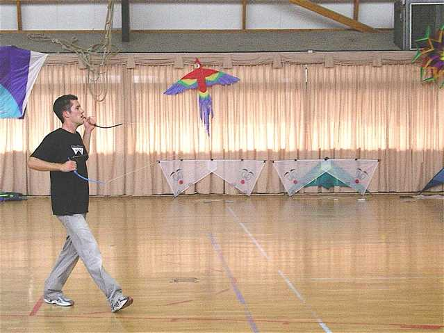
Damien se présente en deux lignes et en quatre lignes, dans son style inimitable et il fait 2 fois plus de figures que les autres dans le même temps !

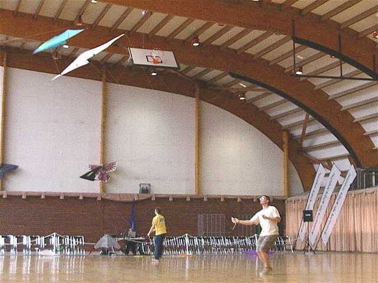
Les compètes finies, on recommence à s'amuser sur les surfaces. Mais qu'est-ce que c'est que ce drôle d'attelage ?!

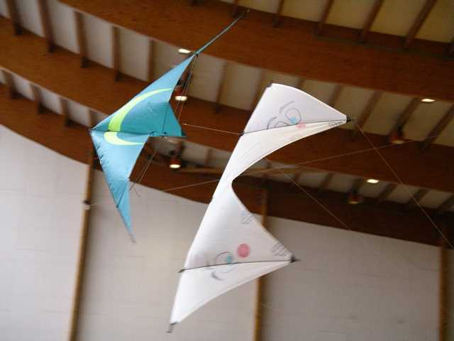
Ben quoi, c'est un train de deux CVs ! Un peu spécial quand même, une union contre-nature de 2 lignes et de révo !

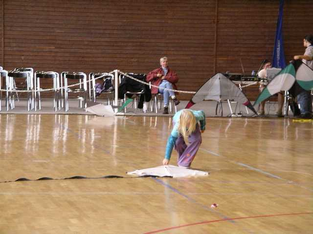
Cette toute jeune cervoliste tiendra son "combattant" en l'air pendant au moins deux heures sans discontinuer !

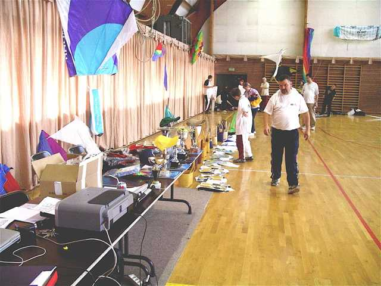
Ca va être la remise des prix. Franck prépare les lots à remettre aux gagnants : coupes, bien sûr, mais aussi T-shirts, casquettes, sacs, livres, badges, etc.

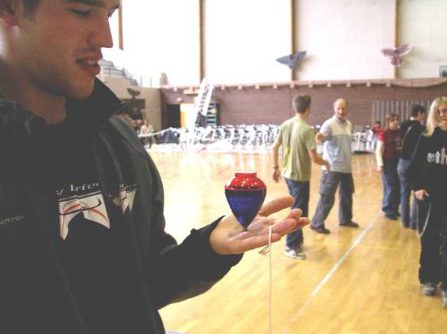
Damien n'a pas pu résister, il a acheté une toupie à roulement, et il fait déjà des figures avec !

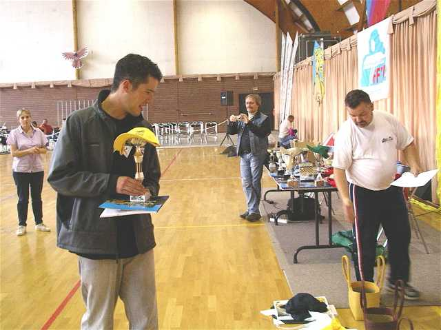
Mais il lâche quand même la toupie pour monter sur le podium (virtuel) et recueillir ses prix !

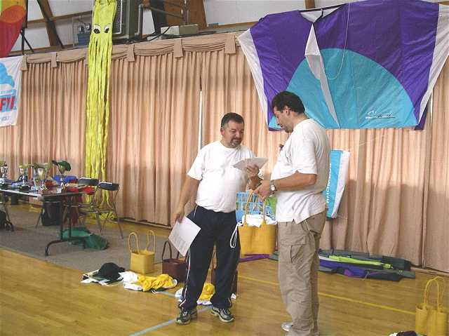
Bruno a aussi un prix spécial du jury pour son ballet. Pour les imposées, évidemment, il a concouru avec des lignes de 1,50 m et ça l'a handicapé...

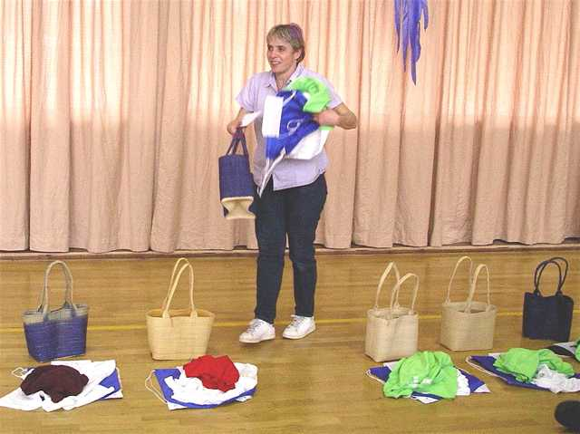
Marie-Christine, la seule femme de la compète (sa fille Lucie a grandi et a abandonné le CV pour d'autres sujets de préoccupation de son âge...) aura aussi un prix...

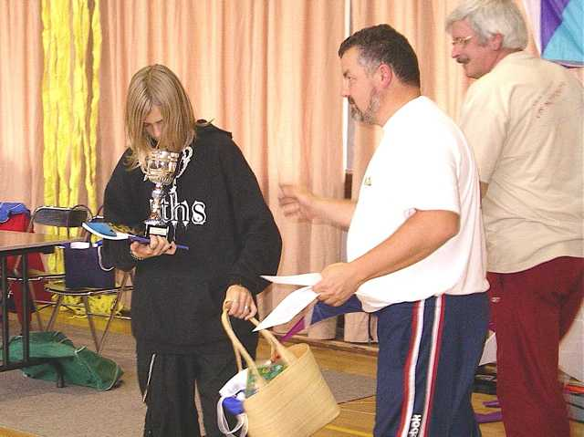
Et un des Maxime a aussi les bras chargés d'un tas de récompenses bien méritées, il domine sa catégorie !

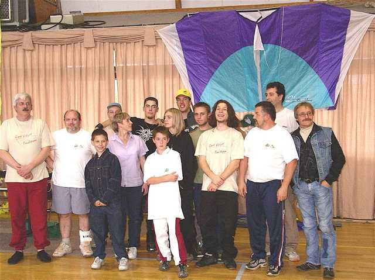
Pour finir, une petite photo souvenir des compétiteurs, enfin, ceux qui ne sont pas partis.

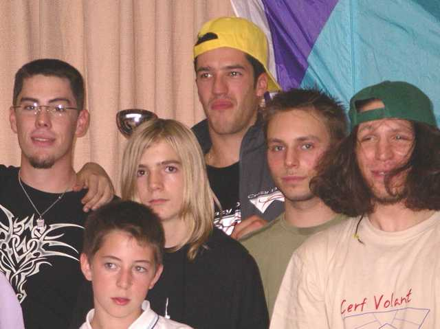
Ils ont l'air de rigoler, mais sur les plans de détail, on sent quand même l'émotion des principaux acteurs !
Tout s'est bien passé, on a été bien accueilli et, avantage de l'indoor, il tombait des cordes dehors pendant qu'on volait en T-shirt ! A l'année prochaine, Cramay'Ailes !